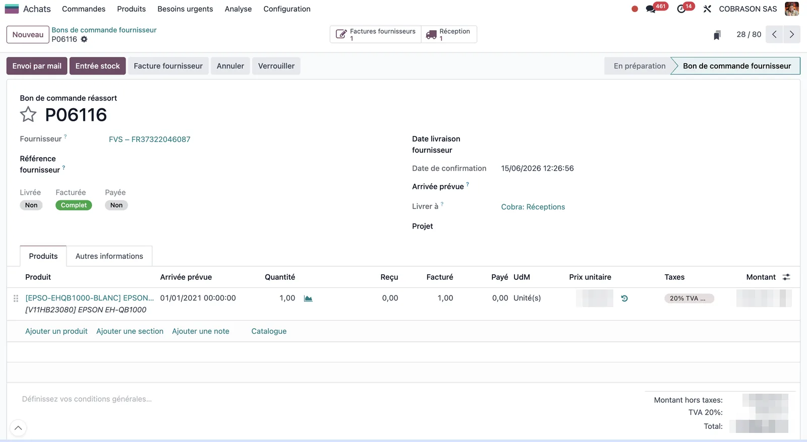
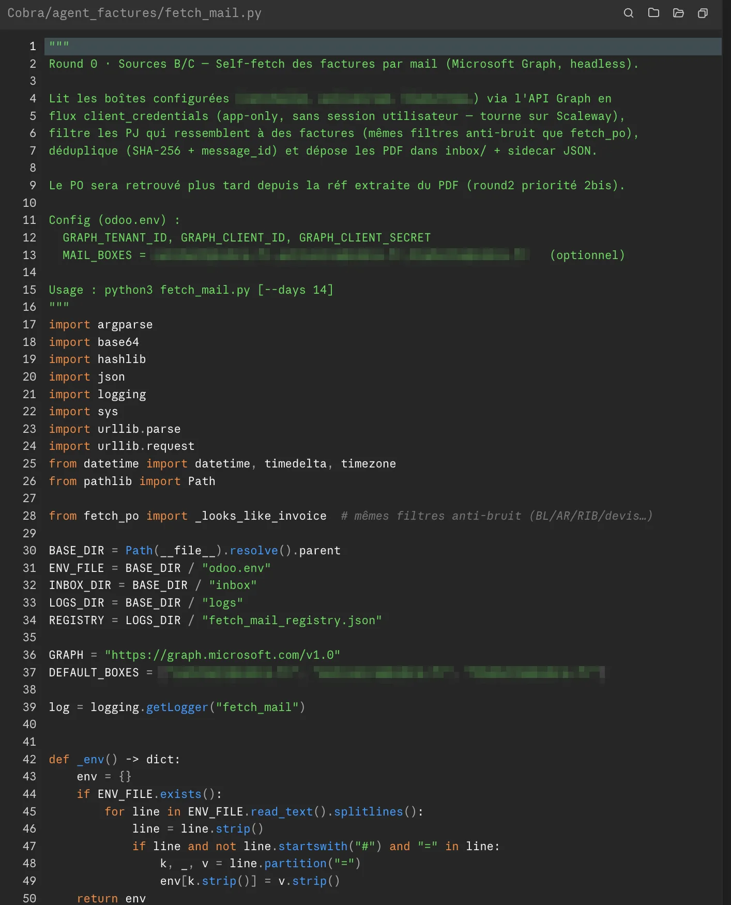
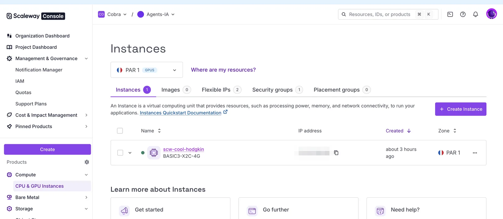

1. Le vrai problème : pas la vitesse, la discipline
Odoo est en place chez Cobra depuis février 2025. Sur le papier, la chaîne comptable est limpide : commande client (SO) → commande fournisseur (PO) → facture → paiement → batch SEPA. Chaque facture devrait pointer la commande qui l'a déclenchée — c'est ce qui permet le 3-way match (commande / réception / facture) et donc le contrôle automatique des prix et des quantités.
Dans la vraie vie, cette chaîne n'a jamais été appliquée proprement. La comptabilité fournisseur en place n'a pas maîtrisé l'outil : les factures étaient saisies « à plat », déconnectées de leur commande d'origine, les paiements rarement lettrés correctement. Résultat : un Odoo plein de saisies illisibles, et une chaîne impossible à relire de bout en bout.
2. La dérive, chiffrée
Avant d'écrire la moindre ligne, on a mesuré l'état réel de la base (lecture seule, via XML-RPC). Les chiffres parlent d'eux-mêmes — sur 5 450 factures fournisseurs postées depuis février 2025 :
| Symptôme de la dérive | Nombre | Montant |
|---|---|---|
| Factures sans aucun lien à une commande (PO) | 1 524 | 2 032 524 € TTC |
| Impayées / partielles de plus de 2 mois | 241 | 600 531 € restant à payer |
| — dont antérieures à 2026 (5-6 mois et +) | 130 | 371 762 € |
Soit, en clair : ~2 M€ de factures fournisseurs saisies hors-chaîne, sans lien à la moindre commande, et 600 k€ d'impayés qui traînent depuis plus de deux mois. C'est le coût de la dérive — et précisément ce que l'agent empêche de se reproduire.
Nuance honnête, parce que ce site est en build in public et pas en mode brochure : la dérive est surtout historique. Sur les factures détachées d'une commande, 1 379 sont anciennes (> 2 mois) contre 145 récentes. Ça s'est amélioré avec le temps — mais 145 récentes prouvent que sans contrainte automatique, la saisie humaine re-dérive, toujours.
Rendre la chaîne lisible : les 3 statuts sur la commande
Première brique, côté Odoo : j'ai ajouté trois champs sur la commande fournisseur (purchase.order) pour exposer l'état complet directement depuis la PO — avant, il fallait fouiller factures et paiements séparément.
| Champ | Lecture | Sur les PO confirmées |
|---|---|---|
| Livrée | Marchandise reçue ? | complète 3 439 · partielle 77 · non 309 |
| Facturée | Facture reçue et liée ? | complète 3 319 · partielle 144 · non 362 |
| Payée | Réglée ? | complète 3 003 · partielle 147 · non 675 |
D'un coup d'œil sur une commande : livrée ? facturée ? payée ? La chaîne redevient lisible — ce qui était impossible avec des factures détachées de leur commande.


3. Ce que fait l'agent (et pourquoi il ne peut pas dériver)
L'agent n'« aide » pas à mieux saisir. Il remplace la saisie par un workflow qu'il est incapable de ne pas respecter. Le parcours d'une facture, de bout en bout :
- Collecte des factures (deux sources). Toutes les 15 minutes, l'agent ramasse les factures là où elles arrivent : les PDF déjà attachés aux commandes dans Odoo (source A), et surtout les boîtes mail où convergent les fournisseurs — dont une attrape-tout — via l'API Microsoft Graph (sources B/C). Il repère les pièces jointes et corps de mail qui sont des factures, et déduplique (SHA-256 + identifiant de message).
- Extraction. Selon le fournisseur, chaque facture est lue soit par un parser dédié (formats connus et structurés, très fiables), soit — le cas général — par OCR + API Claude (modèle Opus 4.8). Dans les deux cas, la sortie est une structure propre, avec un score de confiance : fournisseur, numéro, date, lignes, montants, TVA, DEEE, port.
- Matching ligne par ligne. Chaque ligne est rapprochée de la ligne de commande exacte (hiérarchie d'identification : code fournisseur → EAN → nom → prix), avec gestion des pièges silencieux (quantités paire/pièce, DEEE et port intégrés ou en ligne séparée).
- Contrôles bloquants. Doublon ? Écart de prix > 5 % ? Commande introuvable ? → la facture ne part pas en brouillon : elle est parquée pour reprise humaine (canal « intervention », ou « à trier » s'il n'y a aucune référence de commande lisible dans le document).
- Validation humaine dans Teams. Une carte (Adaptive Card) résume la facture et propose les actions en un clic. L'humain ne touche plus jamais l'interface Odoo, sauf pour le batch SEPA hebdomadaire.
Les quatre garde-fous qui rendent la dérive structurellement impossible :
- Rattachement garanti par construction. Chaque ligne de facture créée pointe la ligne de commande exacte (
purchase_line_id) et renseigne l'origine automatiquement. L'agent ne sait pas créer une facture « libre ». 100 % de ce qu'il crée est lié à sa commande — contre les 28 % détachées de l'historique humain. - Anti-doublon. Il refuse de créer si la référence fournisseur existe déjà, ou si la ligne de commande est déjà facturée.
- Cohérence prix. Écart facture vs commande > 5 % → blocage et demande d'une facture corrigée au fournisseur, avant toute écriture.
- Constance. Les mêmes règles, toutes les 15 minutes, sur chaque facture, indéfiniment. Le code ne fatigue pas, ne zappe jamais l'étape pénible.
Le contrôle d'écart de prix, en code
Le garde-fou « cohérence prix » n'est pas un vœu pieux : c'est une règle codée, qui bloque avant toute écriture dans Odoo. Au-delà de 5 % d'écart entre le prix facturé et le prix négocié sur la commande, l'agent ne crée rien — la facture est parquée et signalée.
TOLERANCE_PRIX = 0.05 # 5 % : au-delà, on ne crée RIEN, la facture part en intervention
def controle_ecart_prix(ligne_facture, ligne_commande):
"""Compare le prix unitaire facturé au prix négocié sur la commande (PO).
≤ 5 % : écart mineur (frais de port noyés, arrondis) → la facture suit le flux normal.
> 5 % : bloquant → aucun brouillon n'est créé, la facture est parquée et signalée.
L'humain redemande alors une facture corrigée au fournisseur.
"""
prix_po = ligne_commande.prix_unitaire_ht
if not prix_po: # ligne sans référence commande : non contrôlable ici
return Verdict(statut="non_controle")
ecart = (ligne_facture.prix_unitaire_ht - prix_po) / prix_po
if abs(ecart) <= TOLERANCE_PRIX:
return Verdict(statut="ok", ecart_pct=round(ecart * 100, 1))
return Verdict(
statut="bloquant",
motif="ecart_prix",
ecart_pct=round(ecart * 100, 1),
message=(
f"Prix facturé {ligne_facture.prix_unitaire_ht:.2f} € "
f"vs commande {prix_po:.2f} € ({ecart:+.1%}) — "
f"au-delà de la tolérance de {TOLERANCE_PRIX:.0%}"
),
)
Un verdict bloquant remonte au moteur de décision, qui refuse la création du brouillon et route la facture vers le canal « intervention » avec son motif. C'est l'anti-dérive en une fonction : pas de jugement humain à chaque facture, une règle qui s'applique seule, toujours.

4. L'architecture en prod sur Scaleway
Le point qui change tout par rapport à la phase de conception : l'agent existe en dehors de mon ordinateur. Il tourne sur une instance Scaleway (VM BASIC3-X2C-4G : 2 vCPU, 4 Go de RAM, région Paris), pour ~36 €/mois. Hébergement français — ça compte pour des données comptables.
- Le batch : un
crontoutes les 15 minutes lance la boucle de l'agent (lecture mails → extraction → matching → cartes Teams). - L'endpoint : un petit serveur Flask, lui, tourne en permanence (service systemd) pour recevoir les clics sur les boutons des cartes Teams et écrire dans Odoo en retour. Il est joignable via un sous-domaine dédié (
agent-factures.cobra.fr, DNS chez Gandi) plutôt qu'une IP nue, avec signature HMAC sur chaque requête entrante. - Lecture des mails : via Microsoft Graph (API Microsoft 365, flux applicatif), pas d'IMAP. Lire les mails directement à la source, c'est ce qui rend l'agent autonome : aucune intervention humaine pour « lui transmettre » une facture.
- Odoo : Odoo 18 Enterprise, accès XML-RPC + clé API.
| Couche | Techno |
|---|---|
| Extraction | API Claude (Opus 4.8) · pdfplumber · Tesseract OCR (fr/en) · Poppler |
| Logique | Python 3.14 · pydantic (schéma strict) |
| Endpoint Teams | Flask · signature HMAC · Adaptive Cards v1.5 via Power Automate |
| Mails | Microsoft Graph (flux applicatif) |
| Hébergement | Instance Scaleway (Paris) · cron + systemd |

fetch_mail.py), écrit avec Claude Code : flux applicatif Microsoft Graph, filtres anti-bruit, déduplication SHA-256, dépôt des PDF. Le build in public jusque dans le code.
À quoi ressemble un passage, en vrai
Voici le log d'un cycle réel de 15 minutes (37 secondes d'exécution). Neuf factures en file, et surtout : chaque issue possible y passe — validation, doublon déjà comptabilisé, écart de prix qui bloque, commande introuvable, document non facturable rejeté. C'est l'agent qui trie, en appliquant les mêmes règles à chaque ligne.
$ python agent_loop.py --write
2026-06-17 08:15:00 [INFO] agent_loop — ═══ Passage boucle 2026-06-17T08:15:00Z (write=True) ═══
2026-06-17 08:15:03 [INFO] fetch_po — [A] PO Odoo : 261 PO scannés · 4 PJ candidates · 2 collectées · 2 dédup
2026-06-17 08:15:10 [INFO] fetch_mail — [B/C] Graph : 3 boîtes (***@cobra.fr) → 87 messages · 31 PJ PDF
2026-06-17 08:15:10 [INFO] fetch_mail — → 7 collectées · 22 dédup · 2 ignorées (BL / relance paiement)
2026-06-17 08:15:10 [INFO] agent_loop — 9 nouvelles factures en file de traitement
2026-06-17 08:15:13 [INFO] extract — [1/9] FA-2026-04417 · Fournisseur-A → LLM ok (confiance 0.94 · 3 lignes · HT 1 642,80 €)
2026-06-17 08:15:14 [INFO] orchestr. — [1/9] PO P06143 retrouvé · 3/3 lignes matchées · écart prix max +1,2 % → ✅ VALIDER
2026-06-17 08:15:14 [INFO] orchestr. — brouillon 150148 créé · PDF attaché · carte → canal « À valider »
2026-06-17 08:15:17 [INFO] extract — [2/9] 26060940 · Fournisseur-B → parser regex (confiance 0.99 · 1 ligne + DEEE 0,75 €)
2026-06-17 08:15:18 [INFO] orchestr. — [2/9] PO P06122 · facture déjà comptabilisée (réf existante) → 🟣 DÉJÀ TRAITÉ → carte miroir « À payer »
2026-06-17 08:15:21 [WARN] orchestr. — [3/9] PROF-5582 · Fournisseur-C · PO P06097 · ligne 2 : 214,00 € vs 180,00 € (+18,9 %) > 5 %
2026-06-17 08:15:21 [WARN] orchestr. — → 🟠 INTERVENTION (ecart_prix) · aucun brouillon créé · carte → « À valider »
2026-06-17 08:15:24 [INFO] extract — [4/9] F007241 · Fournisseur-D → LLM ok (confiance 0.91 · 6 lignes · port 12,00 €)
2026-06-17 08:15:25 [WARN] orchestr. — [4/9] aucune réf PO dans le document (source mail) → ⏸️ À TRIER · parquée · pas de carte
2026-06-17 08:15:27 [INFO] extract — [5/9] AVR-1180 · Fournisseur-E → LLM ok (confiance 0.86)
2026-06-17 08:15:28 [WARN] orchestr. — [5/9] PO P05904 · ligne déjà entièrement facturée (qty_invoiced ≥ qté) → 🟠 INTERVENTION (doublon)
2026-06-17 08:15:30 [INFO] extract — [6/9] FC-77310 · Fournisseur-F → LLM ok (confiance 0.92 · 2 lignes)
2026-06-17 08:15:31 [WARN] orchestr. — [6/9] réf PO « P06210 » introuvable dans Odoo → 🟠 INTERVENTION (commande_introuvable)
2026-06-17 08:15:33 [INFO] orchestr. — [7/9] FA-2026-04420 · Fournisseur-A · PO P06151 · 2/2 matchées · +0,4 % → ✅ VALIDER → brouillon 150149
2026-06-17 08:15:35 [INFO] orchestr. — [8/9] 26061002 · Fournisseur-B · PO P06160 · 1/1 matchée · 0,0 % → ✅ VALIDER → brouillon 150150
2026-06-17 08:15:36 [INFO] orchestr. — [9/9] BL-99317 → document non facturable (bon de livraison) → rejeté
2026-06-17 08:15:37 [INFO] agent_loop — [PIPELINE] {'total': 9, 'valider': 3, 'deja_traite': 1, 'intervention': 3, 'a_trier': 1, 'rejete': 1, 'erreur': 0}
2026-06-17 08:15:37 [INFO] agent_loop — ═══ Fin passage en 37s — 3 brouillons créés, 3 cartes d'intervention ═══
Sur ces 9 factures : 3 validées et passées en brouillon Odoo lié à leur commande, 1 déjà comptabilisée (carte miroir de paiement), 3 parquées en intervention (écart de prix, doublon, commande introuvable), 1 à trier (aucune référence de commande) et 1 rejetée (bon de livraison, pas une facture). Aucune n'a glissé hors-chaîne — c'est précisément ce que la saisie humaine ne garantissait pas.
À noter sur les canaux : « À valider » est la file d'action humaine — il regroupe à la fois les brouillons propres prêts à valider d'un clic et les cas parqués à traiter (écart de prix, doublon…). Les canaux « À payer » et « Payées », eux, suivent l'état de paiement côté Odoo.
5. Les chiffres : volume, temps, ROI
Volume mesuré : ~349 factures fournisseurs/mois, soit ~80/semaine.
Le temps humain par facture (import, vérification ligne à ligne, lettrage) est de l'ordre de 7 à 12 minutes en saisie manuelle. En retenant 9 minutes médianes sur 80 factures/semaine :
| Temps humain / semaine | |
|---|---|
| Avant l'agent (saisie + contrôle + lettrage) | ~12 h (≈ 0,35 ETP) |
| Avec l'agent (valider les cartes Teams + cas en intervention) | ~2 à 2,5 h |
| Temps net économisé | ~9 à 10 h / semaine |
6. Ce que l'agent ne fait PAS
Pour rester crédible, il faut être net sur le périmètre. L'agent garantit le rattachement facture → commande et la cohérence des prix. Il ne fait pas :
- Le lettrage / rapprochement bancaire. Le paiement et le batch SEPA restent une étape humaine et bancaire. Ce que l'agent apporte côté paiement, c'est de la visibilité, pas l'exécution : trois sous-canaux Teams (À valider / À payer / Payées) reflètent l'état de paiement Odoo. Mais en livrant des factures propres et liées à leur commande, il rend le lettrage aval trivial et fiable — là où une facture détachée le rend manuel et fragile.
- La mise à jour « en place » des cartes Teams. À chaque changement d'état, l'agent poste une nouvelle carte miroir dans le bon canal — il ne modifie pas la carte existante (limite des webhooks Power Automate). Un vrai live-update par bot Teams est identifié comme prochaine étape, pas encore fait.
- Le nettoyage du passé. Les ~1 500 factures détachées et les 241 traînes impayées restent un chantier de régularisation. L'agent ne répare pas l'historique — il garantit que le futur ne se salit plus.
7. Ce que ça illustre
La leçon n'est pas « l'IA traite les factures ». C'est : quand un process métier dérive parce qu'il dépend de la discipline humaine, le bon réflexe n'est pas de remettre de la formation ou du contrôle — c'est de coder la règle pour qu'elle s'applique seule, toujours, sans exception.
L'agent n'est pas « plus rapide qu'un comptable ». Il est incapable de dériver. C'est une propriété différente, et c'est elle qui répare durablement une chaîne comptable, là où aucune quantité d'effort humain n'y arrivait.
À venir / la suite
- Live-update des cartes Teams (bot Teams plutôt que webhook) pour une carte qui se met à jour en place.
- Gestion des secrets via un coffre dédié.
- Chantier de régularisation de l'historique (factures détachées, traînes impayées) — mi-automatisable une fois le flux entrant sous contrôle.
- Mesure réelle des temps avant/après pour remplacer la fourchette de marché par nos chiffres.